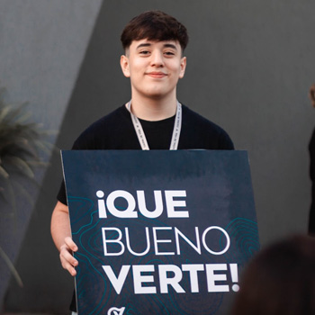
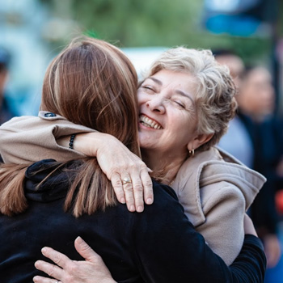
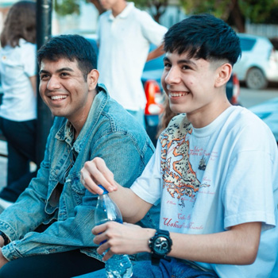
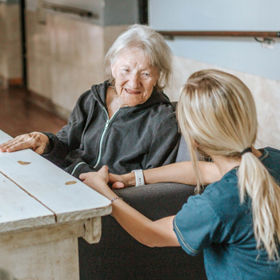

La vida de nuestra iglesia
Esta semana,
sigamos cerca.
Un mensaje para crecer.
Un lugar para encontrarnos.
Una comunidad para compartir.
La vida de Caudal
Hay mucho para compartir.
Encuentros, formación y oportunidades
para seguir dando pasos.
Agenda de muestra · fecha a confirmar
Retiro de Hombres
Un tiempo para encontrarnos y seguir creciendo.
Consultá la próxima edición ↗
Agenda de muestra · fecha a confirmar
Sumate a servir
Hay algo que podés aportar a la vida de otros.
Conocé los equipos ↗
Agenda de muestra · fecha a confirmar
Integrar
Conocé Caudal y descubrí cómo ser parte.
Consultá los próximos encuentros ↗
Hay lugar para vos.Grupos Caudal
Una iglesia grande.
Una comunidad cercana.
Los grupos son espacios para hacer amigos, crecer en la fe y compartir la vida. No tenés que recorrer tu camino solo.
Quiero encontrar un grupo No sé cuál elegir, ¿me ayudan? ↗Bienvenido a Caudal
Más que un lugar.
Personas con quienes caminar.
Somos una iglesia donde podés conocer a Dios, construir relaciones sinceras y descubrir tu propósito.
Queremos que puedas sentirte recibido, encontrar comunidad y ser parte de lo que Dios está haciendo en nuestra ciudad.
Nos encantaría conocerte ↗Cada etapa tiene su lugar
Tu familia también
es parte.
Conocé nuestros espacios para
niños, preadolescentes y jóvenes.
Un camino para crecer
Tu siguiente paso.
No hace falta tener todo resuelto.
Podés empezar desde donde estás.
Conocer a Dios
Todo comienza con Jesús. Conocé su amor y descubrí una nueva manera de vivir.
02Encontrar libertad
Construí relaciones y caminá acompañado en Grupos Caudal.
03Descubrir tu propósito
Conocé Integrar y encontrá tu lugar en nuestra comunidad.
04Hacer la diferencia
Compartí tus dones y sumate a servir a otras personas.
Misiones Caudal
El amor también
se vuelve acción.
Creemos en una iglesia presente. Cerca de las personas, compartiendo el amor de Jesús con acciones concretas de solidaridad.
Quiero ser parte
Tu primera visita
Nos encantaría
recibirte.
Vení tal como sos. Si tenés preguntas o querés avisarnos que venís, estamos para ayudarte.
Escribinos por WhatsAppCaudal de Vida
España 1626
San Miguel, Buenos Aires
Sábados y domingos
Consultá los horarios vigentes antes de venir.¿Puedo ir si no conozco a nadie?
Sí. Queremos recibirte y ayudarte a conocer Caudal. Podés escribirnos antes de tu visita si te gustaría conversar con alguien.
¿Hay espacios para mi familia?
Caudal tiene espacios para niños, preadolescentes y jóvenes. Escribinos para confirmar cuál corresponde y en qué reunión funciona.
¿Cómo puedo dar mi siguiente paso?
Podés conocer Integrar, encontrar un grupo o consultar por bautismo y oportunidades para servir. Te ayudamos a elegir por dónde comenzar.